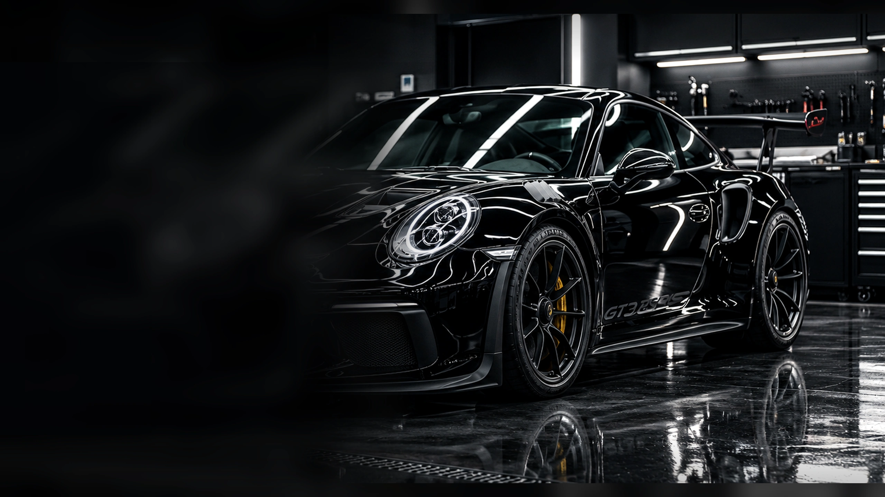
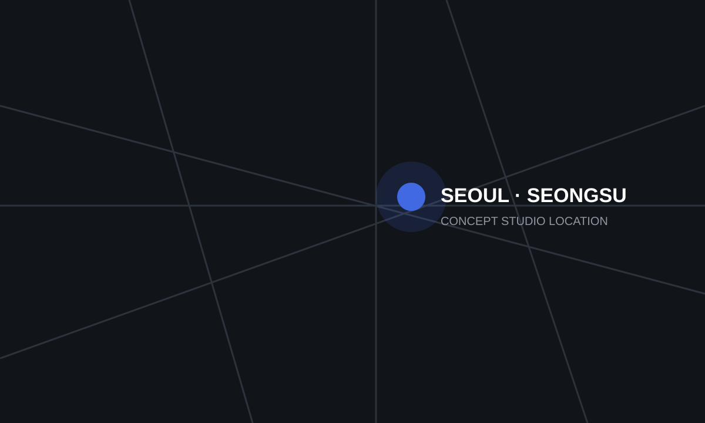

Essential Detail
일상적인 외·내부 차량 관리.
99,000원~
SEDAN · 약 2시간
- Pre / Hand Wash
- Wheel Cleaning
- Interior Vacuum
- Glass Cleaning

설명보다 먼저, 결과로 보여드립니다.

Paint Correction + Ceramic Coating

PPF + Ceramic Coating

Full Body PPF
차량 상태에 필요한 작업을 선택하고, 불필요한 시공은 권하지 않습니다.

외부와 실내를 차량 상태에 맞춰 세밀하게 관리합니다.

스월과 미세 스크래치를 확인하고 필요한 범위에서 도장면을 개선합니다.

도장면과 유리, 휠, 가죽에 적절한 보호층을 형성합니다.

필름 성능과 농도, 차량 사용 환경을 고려해 적절한 구성을 안내합니다.

생활 스크래치가 잦은 부위부터 차량 전체까지 필요한 범위를 보호합니다.

신차 검수와 썬팅, 생활보호 PPF, 코팅을 한 번에 구성합니다.
미세한 차이가 차량 전체의 인상을 바꿉니다.
강한 조명 아래에서 보이던 표면 결함을 확인하고, 필요한 범위만 정교하게 교정합니다.
드래그 또는 키보드 방향키로 결과를 비교할 수 있습니다.
포트폴리오용 샘플 가격이며 차량 크기와 실제 상태에 따라 달라질 수 있습니다.
일상적인 외·내부 차량 관리.
SEDAN · 약 2시간
외부와 실내를 조금 더 깊게 관리하는 대표 디테일링.
SEDAN · 약 3~4시간
정밀 세척과 도장면 컨디션 개선까지 포함하는 집중 관리.
약 6~8시간
신차의 첫 상태부터 제대로 관리합니다.

신차 검수부터 썬팅, 생활보호 PPF, 세라믹 코팅과 초기 디테일까지 균형 있게 구성합니다.
신차 패키지 보기좋은 결과는 마지막 코팅제가 아니라, 그 전에 어떤 과정을 거쳤는지에서 결정됩니다.
전문 조명 아래 도장 상태와 주요 결함을 확인합니다.
필요한 경우 도막 상태를 확인해 불필요한 연마를 줄입니다.
목적에 맞는 패드, 케미컬, 작업 단계를 선택합니다.
조명과 공간을 관리해 오염과 작업 오류를 줄입니다.
출고 전 차량 전체를 다시 확인합니다.
차량 정보와 원하는 작업을 확인합니다.
입고 상태와 필요한 작업 범위를 확인합니다.
서비스 구성, 예상 시간과 견적을 안내합니다.
차량 입고 후 상태를 다시 기록합니다.
확정된 작업 과정에 따라 시공합니다.
출고 전 전체 차량을 최종 확인합니다.
작업 결과와 이후 관리 방법을 안내합니다.
좋은 작업은 좋은 작업 환경에서 시작됩니다.
3단계 선택으로 예상 범위를 확인하는 포트폴리오 데모 견적 도구입니다.
“검은 차량이라 조명 아래에서 스월이 많이 보였는데 작업 후 도장면 반사가 확실히 정돈된 느낌이었습니다.”
“신차 검수부터 썬팅과 생활보호 작업까지 한 번에 확인할 수 있어서 편했습니다.”
“필요한 부위와 굳이 하지 않아도 되는 부위를 구분해서 설명해준 점이 좋았습니다.”
“단순 세차보다 차량 상태와 관리 방법을 같이 설명해줘서 만족스러웠습니다.”
일반 세차가 차량 표면의 기본적인 오염 제거에 중점을 둔다면, 디테일링은 휠, 틈새, 내장재와 도장 상태까지 조금 더 세밀하게 확인하며 관리하는 작업입니다.
기본 디테일링은 약 2~4시간, 광택·코팅·PPF 등의 작업은 차량 상태와 시공 범위에 따라 하루 이상이 필요할 수 있습니다.
작업 종류와 당일 일정에 따라 달라집니다. 충분한 작업 시간을 확보하기 위해 사전 예약을 권장합니다.
네. 예상 출고 시간을 안내한 뒤 작업 완료 시점에 맞춰 다시 방문하는 방식으로 운영됩니다.
제품과 시공 상태뿐 아니라 주행 환경, 세차 방식과 유지 관리에 따라 차이가 발생합니다. 작업 후 관리 방법을 함께 안내합니다.
PPF는 물리적인 보호 필름을 차량 표면에 부착하는 방식이며, 세라믹 코팅은 도장면 위에 보호층을 형성해 관리 편의성과 표면 보호를 돕는 방식입니다.
차량의 순정 유리, 운전 환경, 야간 시야와 관련 법규를 함께 고려해야 합니다. 화면의 Tint Simulation은 농도 차이를 이해하기 위한 시각적 예시입니다.
신차 역시 운송과 보관 과정에서 도장면과 실내 상태에 차이가 있을 수 있습니다. 필요한 경우 상태 확인 후 최소한의 작업만 진행할 수 있습니다.
차량 크기와 작업 면적이 증가하기 때문에 일부 서비스는 추가 비용이 발생합니다.
코팅, PPF, Tint 등 작업 종류에 따라 초기 관리 방법이 다르며 출고 시 작업별 관리 방법을 안내합니다.
차량 정보와 원하는 작업을 알려주시면 필요한 범위를 확인할 수 있도록 구성한 예약 데모입니다.
예약 문의 시작서울 성동구 성수동 · Concept Studio Location
